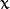
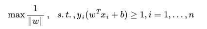

机器学习与数据挖掘-支持向量机(SVM)（一）
最近在看斯坦福大学的机器学习的公开课，学习了支持向量机，再结合网上各位大神的学习经验总结了自己的一些关于支持向量机知识。
一、什么是支持向量机(SVM)?
1、支持向量机（Support Vector Machine，常简称为SVM）是一种监督式学习的方法，可广泛地应用于统计分类以及回归分析。支持向量机属于一般化线性分类器，这族分类器的特点是他们能够同时最小化经验误差与最大化几何边缘区，因此支持向量机也被称为最大边缘区分类器。
2、支持向量机将向量映射到一个更高维的空间里，在这个空间里建立有一个最大间隔超平面。在分开数据的超平面的两边建有两个互相平行的超平面，分隔超平面使两个平行超平面的距离最大化。假定平行超平面间的距离或差距越大，分类器的总误差越小。
3、假设给定一些分属于两类的2维点，这些点可以通过直线分割， 我们要找到一条最优的分割线，如何来界定一个超平面是不是最优的呢?
如下图：
在上面的图中，a和b都可以作为分类超平面，但最优超平面只有一个，最优分类平面使间隔最大化。 那是不是某条直线比其他的更加合适呢? 我们可以凭直觉来定义一条评价直线好坏的标准:
距离样本太近的直线不是最优的，因为这样的直线对噪声敏感度高，泛化性较差。 因此我们的目标是找到一条直线（图中的最优超平面），离所有点的距离最远。 由此， SVM算法的实质是找出一个能够将某个值最大化的超平面，这个值就是超平面离所有训练样本的最小距离。这个最小距离用SVM术语来说叫做间隔(margin) 。
二、如何计算最优超平面?
1、线性分类：
我们通常希望分类的过程是一个机器学习的过程。这些数据点并不需要是 中的点，而可以是任意
中的点，而可以是任意 的点（一个超平面，在二维空间中的例子就是一条直线）。我们希望能够把这些点通过一个n-1维的超平面分开，通常这个被称为线性分类器。有很多分类器都符合这个要求，但是我们还希望找到分类最佳的平面，即使得属于两个不同类的数据点间隔最大的那个面，该面亦称为最大间隔超平面。如果我们能够找到这个面，那么这个分类器就称为最大间隔分类器。
的点（一个超平面，在二维空间中的例子就是一条直线）。我们希望能够把这些点通过一个n-1维的超平面分开，通常这个被称为线性分类器。有很多分类器都符合这个要求，但是我们还希望找到分类最佳的平面，即使得属于两个不同类的数据点间隔最大的那个面，该面亦称为最大间隔超平面。如果我们能够找到这个面，那么这个分类器就称为最大间隔分类器。
我们从下面一个图开始：

中间那条线是wx + b =0，我们强调所有点尽可能地远离中间那条线。考虑上面3个点A、B和C。从图中我们可以确定A是×类别的，然而C我们是不太确定的，B还算能够确定。这样我们可以得出结论，我们更应该关心靠近中间分割线的点，让他们尽可能地远离中间线，而不是在所有点上达到最优。因为那样的话，要使得一部分点靠近中间线来换取另外一部分点更加远离中间线。同时这个所谓的超平面的的确把这两种不同形状的数据点分隔开来，在超平面一边的数据点所对应的 y 全是 -1 ，而在另一边全是 1 。
我们可以令分类函数：
显然，如果 f(x)=0 ，那么 x 是位于超平面上的点。我们不妨要求对于所有满足 f(x)<0 的点，其对应的="" y="" 等于="" -1="" ，而="" f(x)="">0 则对应 y=1 的数据点。如下图。
最优超平面可以有无数种表达方式，即通过任意的缩放 w 和 b 。 习惯上我们使用以下方式来表达最优超平面
=1
式中  表示离超平面最近的那些点，也可以就可以得到支持向量的表达式为：y(wx + b) = 1，
上面说了，我们令两类的点分别为+1, -1，所以当有一个新的点x需要预测属于哪个分类的时候，我们用sgn(f(x))，就可以预测了，sgn表示符号函数，当f(x) > 0的时候，sgn(f(x)) = +1, 当f(x) < 0的时候sgn(f(x)) = –1。
通过几何学的知识，我们知道点 到超平面  的距离为:
的距离为:

特别的，对于超平面, 表达式中的分子为1，因此支持向量到超平面的距离是
||w||的意思是w的二范数。
刚才我们介绍了间隔(margin),这里表示为  , 它的取值是最近距离的2倍:
, 它的取值是最近距离的2倍:
M = 2 / ||w||
最大化这个式子等价于最小化||w||, 另外由于||w||是一个单调函数，我们可以对其加入平方，和前面的系数，熟悉的同学应该很容易就看出来了，这个式子是为了方便求导。
最后最大化  转化为在附加限制条件下最小化函数：
转化为在附加限制条件下最小化函数：

即：
这是一个拉格朗日优化问题，可以通过拉格朗日乘数法得到最优超平面的权重向量W和偏置 b 。
PS
1、咱们就要确定上述分类函数f(x) = w.x + b（w.x表示w与x的内积）中的两个参数w和b，通俗理解的话w是法向量，b是截距;
2、那如何确定w和b呢？答案是寻找两条边界端或极端划分直线中间的最大间隔（之所以要寻最大间隔是为了能更好的划分不同类的点，下文你将看到：为寻最大间隔，导出1/2||w||^2，继而引入拉格朗日函数和对偶变量a，化为对单一因数对偶变量a的求解，当然，这是后话），从而确定最终的最大间隔分类超平面hyper plane和分类函数；
3、进而把寻求分类函数f(x) = w.x + b的问题转化为对w，b的最优化问题，最终化为对偶因子的求解。